Hero-Illustration Vergleich
Original Lottie vs. SVG Prototyp
A — Original Lottie
3.5 MB · Lernecke mit Schreibtisch, Stuhl, Pflanze, Sofa
B — SVG v1 (geometrisch)
~4 KB · Erste Version, clean shapes

C — SVG v2 (Lineart)
~8 KB · Handgezeichnet, Watercolor, Szene auf Schreibtisch

Was der Prototyp zeigt
- Narrativ: Laptop mit KI-Text → Grüne Häkchen (akzeptiert) + Orange Fragezeichen/X (abgelehnt) + Roter Stift = «Du beurteilst»
- Stil: Sketchy Striche, gleiche Farbpalette (Blau, Grün, Orange, Lilac), Paint-On-Animation
- Performance: ~4 KB SVG vs. 3.5 MB Lottie JSON = 875× kleiner
- Editierbar: Farben, Formen, Timing direkt im Code änderbar
Dies ist ein Rohprototyp. Die Strichqualität des Originals (echte Handzeichnung mit Druckvarianz) erreicht ein SVG nicht 1:1. Aber die semantische Passung ist stärker.